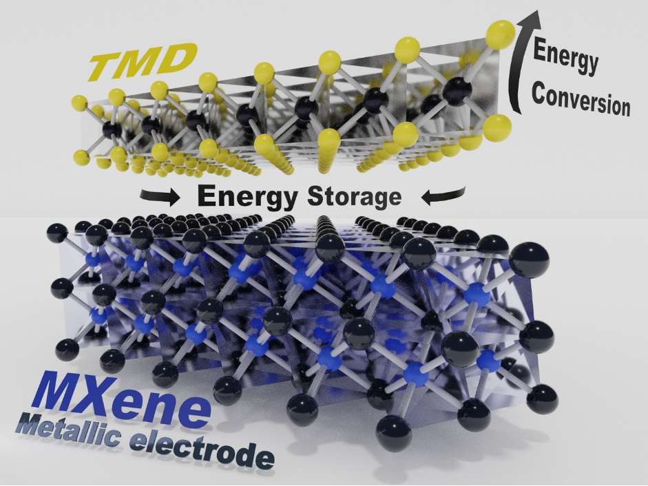
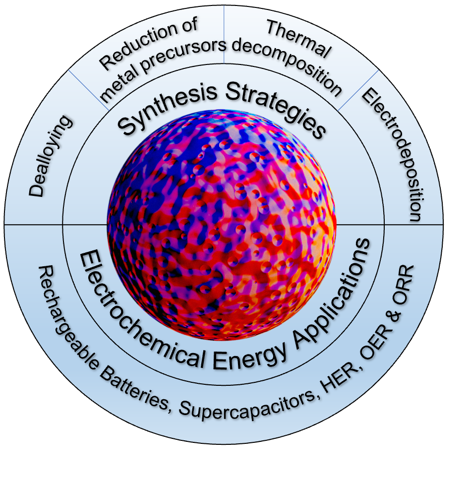

|
Hemanth Neelgund Ramesh
I am a PhD student in Mechanical Engineering at the University of Washington, advised by Prof. Shijing Sun and Prof. Aniruddh Vashishth. I am currently a research intern at Microsoft Research in Redmond, working with the deep learning group.
My research focuses on scientific AI agents and collaborative robotic systems that can accelerate discovery in materials science.
In my past life, I spent some time on the chemistry and physics side of batteries and electrolyzers — building vision models, diffusion models (work with Amazon), LLM-based RAG for developing cost models (work with PNNL), and finding new materials for fast scale-up. Check out our paper with Nobel Laureate M. Stanley Whittingham — link to paper.
I received my MS from UW and my BTech from NITK Surathkal, both in Materials Science and Engineering.
|
|
|
Research Interests
I'm interested in scientific AI agents and collaborative robotic systems that accelerate discovery in materials science — self-driving labs, multi-robot orchestration, and LLM-based reasoning for autonomous experimentation. Previously, I worked on generative and explainable ML for batteries and electrolyzers, including diffusion/RL models for energy-efficient routing, LLM-based cost modeling for battery production, and degradation modeling for Li-ion cells.
|
|
Cool Stuff I've Done
Agentic AI for Autonomous Perovskite Synthesis — self-driving lab framework for multi-robot orchestration, Bayesian optimization for closed-loop experiment design, and an LLM-based reasoning layer for experiment planning and adaptive scheduling.
Generative + RL Models for Energy-Efficient EV Routing — conditional diffusion models (DDPM/DDIM) on 45k+ EV trips and a PPO policy that improved last-mile delivery routing by 24.6% over stochastic baselines, with Amazon. Webpage
LLM-Based Cost Modeling for Battery Production — GPT-4o extraction pipeline converting 7k+ pages into a structured dataset to quantify the ROI of smart manufacturing, with PNNL.
Driver Behavior-Guided Battery Usage Prediction for EVs — multi-fidelity EV dataset and early-trip forecasting model for range estimation, reducing range anxiety. GitHub
Two-Phase Flow Vision — computer vision pipelines on high-speed imaging to characterize two-phase flow and bubble dynamics in water electrolyzers, at Electric Hydrogen.
SOH-Aware Battery Degradation Modeling — explainable ML pipelines on a 28-cell Li-ion dataset to identify the main drivers of capacity fade, at the Sol-Gel Research Group, UW.
|
News
| 2026 | Started a research internship at Microsoft Research, Redmond, with the deep learning group. |
| Oct 2025 | Invited poster presentation at the Amazon Machine Learning Conference, Seattle. |
| Oct 2025 | Invited talk at the Collaboration for Autonomous Science Instruments Workshop, San Diego. |
| Jul 2025 | Invited poster presentation, Emerging Ideas in AI for Materials and Mechanical Design, Duke University. |
| May 2025 | Invited poster presentation, Artificial Intelligence and Machine Learning for Materials, Purdue University & Los Alamos National Laboratory. |
| 2025 | Paper with Nobel Laureate M. Stanley Whittingham, "From Mining to Manufacturing," published in Chemical Reviews. |
| 2025 | Paper on K+ pre-intercalated vanadium pentoxide cathodes published in Journal of Power Sources. |
| Mar 2025 | Selected oral presentation at the American Chemical Society Spring 2025 Conference, San Diego. |
| 2024–2025 | Awarded the Herbold Data Science Fellowship and the Mechanical Engineering Departmental Fellowship, UW. |
| Aug 2024 | Started my PhD in Mechanical Engineering at the UW Sun Lab & Vashisth Research Lab. |
|
|
Publications
Full list on Google Scholar. (* equal contribution)
 |
Transition Metal Dichalcogenides decorated MXenes: Promising Hybrid Electrodes for Energy Storage and Conversion Applications
N R Hemanth*, Taekyung Kim*, Byeongyoon Kim*, Arvind H. Jadhav, Kwangyeol Lee, Nitin K. Chaudhari
Materials Chemistry Frontiers, 5, 3298–3321, 2021.
|
 |
Metallic Nanosponges for Energy Storage and Conversion Applications
N R Hemanth*, Ranjit D Mohili*, Monika Patel, Arvind H Jadhav, Kwangyeol Lee, Nitin K Chaudhari
Journal of Materials Chemistry A, 10, 14221–14246, 2022.
|
Journal Publications
- Hemanth Neelgund Ramesh, Shijing Sun, Chyi-Fu Hong, André Snoeck. Conditional Diffusion Models for Energy Efficient Routing. Submitted to Amazon internal conference.
- Shuan Cheng, Xiao Cui, Hemanth Neelgund Ramesh, William C Chueh, Shijing Sun. Small data machine learning for durability challenges in energy devices. Preprint.
- Hemanth Neelgund Ramesh, Shijing Sun, Guozhong Cao. Decoupling Complex Cell Aging with Explainable Machine Learning: A Perspective. Journal of Physics Energy (submitted). ChemRxiv.
- Hemanth Neelgund Ramesh, Souryadeep Mondal, Xiao Ma, Shuan Cheng, Tristan Angeles, Shijing Sun. Mind the Driver: Behavior-aware Battery Usage Prediction to Reduce Electric Vehicle Range Anxiety. Applied Energy (submitted). ChemRxiv.
- Yan Lin, Hemanth Neelgund Ramesh, Anthony J. Gironda, Liyan Lin, Xiaoxiao Jia, Yandong Guo, Gerald T. Seidler, Tao Hu, Ulla Lassi, Guozhong Cao. K+ Pre-Intercalated Hydrate Vanadium Pentoxide as a Cathode for Enhanced Stability and Kinetics in Sodium-Ion Batteries, Journal of Power Sources, 653, 237766, 2025.
- Jie Xiao and Stanley Whittingham et al. From Mining to Manufacturing: Scientific Challenges and Opportunities behind Battery Production, Chemical Reviews, 125, 6397–6431, 2025.
- Ranjit D. Mohili, Kajal Mahabari, Monika Patel, N R Hemanth, Arvind H. Jadhav, Kwangyeol Lee, Nitin Chaudhari. HF-free Low-Temperature Synthesis of MXene for Electrochemical Hydrogen Production, Nanotechnology, 36, 105401, 2025.
- Ranjit Mohili*, N R Hemanth*, Haneul Jin*, Kwangyeol Lee, Nitin K Chaudhari. Emerging High Entropy Metal Sulphide and Phosphide for Electrochemical Water Splitting, Journal of Materials Chemistry A, 11, 10463–10472, 2023.
- Monika Patel, N R Hemanth, Jeny Gosai, Ranjit Mohili, Ankur Solanki, Mohendra Roy, Baizeng Fang, Nitin K Chaudhari. MXenes: promising 2D memristor materials for neuromorphic computing components, Trends in Chemistry, 4, 835–849, 2022.
- N R Hemanth, Balasubramanian K. Recent advances in 2D MXenes for enhanced cation intercalation in energy harvesting Applications: A review, Chemical Engineering Journal, 392, 123678, 2020.
- RaviPrakash Magisetty, N R Hemanth, Pawan Kumar, Anuj Shukla, Raja Shunmugam, Balasubramanian K. Multifunctional conjugated 1,6-heptadiynes and its derivatives stimulated molecular electronics: Future moletronics, European Polymer Journal, 124, 109467, 2020.
- RaviPrakash Magisetty, N R Hemanth, Anuj Shukla, Raja Shunmugam, Balasubramanian K. Poly(1,6-heptadiyne)/NiFe2O4 composite as capacitor for miniaturized electronics, Polymer-Plastics Technology and Materials, 59, 2018–2026, 2020.
Book Chapters
|
|
Miscellanea
Awards & Fellowships
- Herbold Data Science Fellowship, University of Washington (2024–2025) — awarded for excellence in data science research (1 of 5 recipients across the entire graduate school).
- Mechanical Engineering Departmental Fellowship, University of Washington (2024–2025) — awarded to an outstanding incoming graduate student.
Invited Talks & Posters
- Amazon Machine Learning Conference, Seattle — Invited Poster Presentation (Oct 2025)
- Collaboration for Autonomous Science Instruments Workshop, San Diego — Invited Talk (Oct 2025)
- Emerging Ideas in AI for Materials and Mechanical Design, Duke University — Invited Poster Presentation (Jul 2025)
- Artificial Intelligence and Machine Learning for Materials, Purdue University & Los Alamos National Laboratory — Invited Poster Presentation (May 2025)
- American Chemical Society Spring 2025, San Diego — Selected Oral Presentation (Mar 2025)
Teaching
- Graduate Chemistry Tutor — STARS Program, University of Washington February – June 2023
- Taught Chemistry 142 and Chemistry 152 for ∼30 students.
- Mentored highly motivated Washington state residents from low-income backgrounds & under-served high schools to graduate with degrees in engineering and computer science.
|
|
{kind=link}